Manuales de usoControl de Inserción de Trama para un Vamatex C 201
Dos manuales complementarios. El primero explica el uso de la aplicación paso a paso, desde el ingreso hasta la ejecución de un dibujo. El segundo describe la máquina intervenida, qué se le modificó y cómo se la opera en el taller. Cada uno abre con una guía de inicio rápido.
Guía de inicio rápido
Entrar a la dirección del sistema desde el navegador del celular. Conviene agregarla a la pantalla de inicio: queda como un ícono más y se abre a pantalla completa, sin la barra del navegador.
Escribir el nombre de usuario y tocar "Entrar con huella dactilar". El teléfono pide apoyar el dedo en su lector. La huella nunca sale del dispositivo: solo viaja una firma que el servidor verifica.
Arriba está quién inició sesión y el dibujo que está en edición. Abajo, los accesos al Editor y a la Biblioteca. El estado del telar en tiempo real se ve en el Editor, arriba de la grilla, y refleja la máquina real aunque alguien la haya movido desde la botonera.
En el Editor, escribir cuántas filas y columnas tiene el dibujo y tocar Aplicar. Cada fila es una pasada con una sola bobina (en cada pasada entra una sola trama), que se teje en una o más pasadas seguidas; cada columna es una bobina. Las filas van de 1 a 300 y las columnas de 1 a 8, porque cada columna es una bobina de selección y ninguna máquina tiene más.
Tocar las celdas para marcarlas. Una celda marcada muestra un 1 y significa que esa bobina se activa en esa pasada. Tocarla de nuevo la desmarca. Cada fila lleva una sola bobina: si se toca otra celda de la misma fila, la anterior se desmarca sola.
Ponerle un nombre y tocar Guardar. La aplicación pregunta si se guarda sobre el dibujo actual o se crea uno nuevo. Los nombres no se pueden repetir.
Desde la Biblioteca, elegir el dibujo y asignarlo al telar. Con el dibujo cargado, el botón de reproducción arranca la máquina.
- La botonera del telar sigue funcionando siempre. La aplicación no la reemplaza: se suma en paralelo.
- Si se corta la conexión, el sistema no acciona nada y el telar queda como estaba. Al volver la red no ejecuta órdenes acumuladas.
- El modo oscuro está pensado para las horas de poca luz en la planta y se activa desde la pantalla de inicio.
- La ficha técnica de cada dibujo se descarga en PDF desde el editor, para llevarla impresa al puesto.
Explicación completa, paso a paso, de cómo se usa la aplicación web de control del telar: la secuencia de operaciones, qué hace cada pantalla y qué significa cada botón. Cada sección incluye las capturas de la aplicación tal como se ve hoy.
1Qué es esta aplicación
La aplicación web "Control de Inserción de Trama" es el sistema que reemplaza, a nivel de diseño y de datos, a la máquina lectora de secuencia del telar (la que hoy funciona con tarjetas o cinta perforada física). Desde la web se hace lo siguiente:
- Se diseña la matriz o "dibujo" que el telar tiene que tejer.
- Se guarda ese dibujo en una biblioteca, para reutilizarlo cuando haga falta.
- Se envía el dibujo al telar y se controla su ejecución: iniciar, pausar, retroceder. Además, la web refleja lo que se hace desde la botonera del telar: si un operario aprieta Marcha, Pausa o Retroceder en la máquina, el ESP32 lo detecta y la pantalla se actualiza sola. Si la máquina se pone en marcha desde la botonera con el mismo dibujo abierto en el editor, la pantalla se suma al tejido y sigue la cuenta desde la fila en que está el telar.
- Se consulta el estado real del telar en todo momento: si el equipo de control (ESP32) está conectado, y si el telar está tejiendo, pausado o detenido.
Es importante remarcar el alcance actual del sistema: hoy la web controla el arranque y la parada del telar (mediante el ESP32, que aprieta a distancia los mismos botones físicos de Marcha, Pausa y Retroceder de la máquina). La web todavía no dicta la secuencia completa del dibujo al mecanismo del telar paso por paso, eso sigue siendo tarea de la lectora física (cinta perforada) mientras se desarrolla la siguiente etapa del proyecto. En otras palabras: la web decide y guarda **qué** se va a tejer, y puede arrancar y parar la máquina, pero todavía no reemplaza físicamente a la lectora de secuencia.
La aplicación tiene tres pantallas principales, a las que se accede desde el menú inferior: Inicio, Editor y Biblioteca.
2Ingresar a la aplicación (inicio de sesión)
Al abrir la página aparece la pantalla de ingreso. Existen cuatro caminos posibles, según la situación.
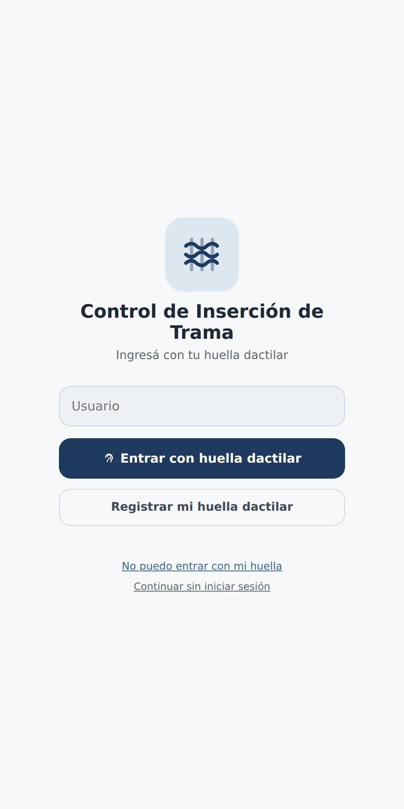
2.1. Ingresar con huella dactilar (usuario ya registrado)
- 1Escribir el nombre de usuario en el campo correspondiente.
- 2Tocar el botón "Entrar con huella dactilar".
- 3Cuando el dispositivo lo solicite, apoyar el dedo en el lector de huella para confirmar la identidad.
- 4Si la huella coincide con la registrada para ese usuario, la aplicación abre la pantalla de Inicio directamente.
2.2. Registrar la huella dactilar por primera vez
Este paso se hace una sola vez por usuario, la primera vez que esa persona va a usar el sistema.
- 1Escribir el nombre de usuario elegido.
- 2Tocar el botón "Registrar mi huella dactilar".
- 3Confirmar mediante el lector de huella del dispositivo.
- 4La aplicación muestra en pantalla un código de recuperación, compuesto por letras y números. Este código:
- Es fijo: no cambia con el tiempo.
- Es la única forma de recuperar el acceso a la cuenta si el día de mañana la huella no puede leerse (por ejemplo, cambio de dispositivo, lector dañado, o el usuario ya no coincide con la huella registrada).
- Se muestra una sola vez en este paso. Es responsabilidad de quien se registra anotarlo o guardarlo antes de continuar. Existe un botón "Copiar código" para copiarlo directamente.
- Puede consultarse nuevamente más adelante desde la sección de perfil del usuario, para quien necesite volver a verlo.
- 5Una vez guardado el código, tocar "Ya lo anoté, entrar" para ingresar a la aplicación.
Cuando ya se registraron los primeros tres usuarios del sistema, el registro libre se cierra automáticamente por seguridad. A partir del cuarto usuario en adelante, quien quiera registrarse necesita autorización de alguien que ya tenga acceso al sistema. Esto no es una jerarquía fija de un único administrador: cualquier usuario que ya haya sido autorizado a entrar, sin importar si fue de los primeros tres o si entró después con autorización, puede a su vez autorizar a una persona nueva. En la práctica, esto se resuelve con un código de invitación: la persona que ya tiene acceso lo genera desde Inicio, con el botón «Invitar a alguien (generar código)», se lo pasa a la persona nueva, y esta lo escribe en la pantalla de registro para poder crear su cuenta. Cada código sirve una sola vez y vence a los siete días. Sin ese código, un usuario nuevo no puede registrarse por sí solo.
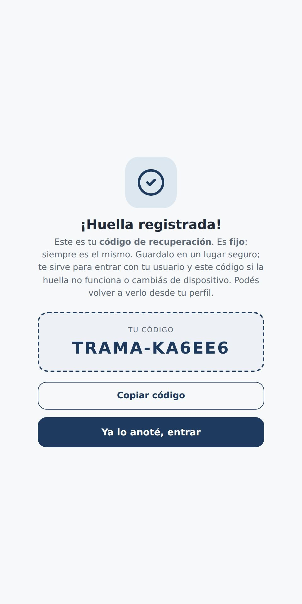
2.3. No se puede ingresar con la huella (recupero de acceso)
Esta opción se usa cuando la huella dactilar no funciona o no está disponible.
- 1Tocar "No puedo entrar con mi huella".
- 2Escribir el nombre de usuario.
- 3Escribir el código de recuperación que se guardó en el paso 2.2 al momento del registro.
- 4Tocar "Entrar".
Si el usuario no conserva su código de recuperación, no va a poder recuperar el acceso por este medio; en ese caso, tiene que gestionar el acceso con quien administre el sistema.
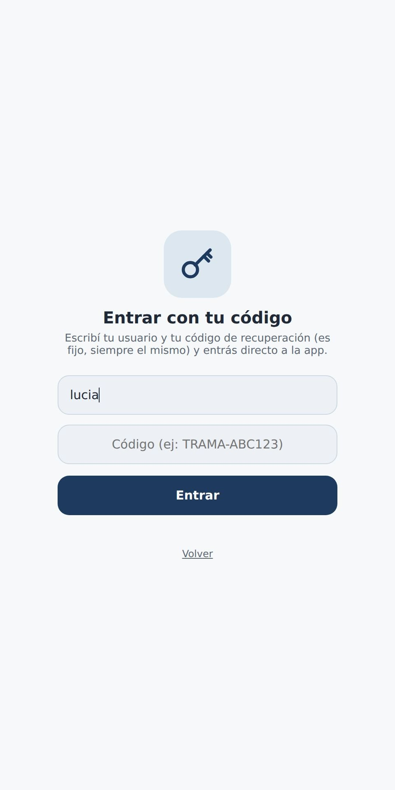
2.4. Continuar sin iniciar sesión (modo invitado)
Debajo de las opciones de ingreso está «Continuar sin iniciar sesión». Sirve para recorrer la aplicación y diseñar dibujos sin registrar una huella, por ejemplo en una presentación. Tiene límites, para que nadie que abra la página pueda manejar la máquina ni cambiar el trabajo de los operarios:
- No comanda el telar: Iniciar (▶), Pausa (⏸), Retroceder (⏪) y Terminar trabajo (⏹) muestran el aviso «Estás como invitado» y no le mandan nada a la máquina. Tampoco puede validar el conteo ni generar invitaciones.
- Puede crear dibujos nuevos, y cambiar o borrar solo los que creó como invitado. Los dibujos de los operarios los puede abrir y mirar, pero no modificarlos ni borrarlos: al intentarlo, la aplicación avisa «este dibujo es de los operarios». Cuando un operario guarda un dibujo hecho por un invitado, pasa a ser de los operarios.
Para usar todas las funciones, tocar «Iniciar sesión» en la pantalla de Inicio y entrar con la huella o con el código.
3Pantalla de Inicio
Es la primera pantalla que se ve al ingresar a la aplicación (una vez resuelto el inicio de sesión). Desde acá se accede al resto de las funciones y se ve información general del sistema.
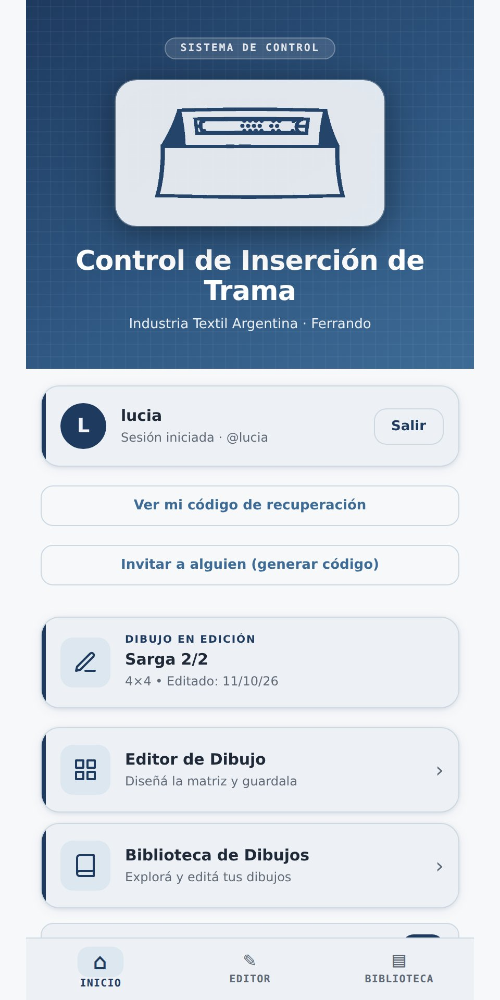
3.1. Información de sesión
En la parte superior se muestra el usuario que inició sesión, junto con un botón Salir para cerrar la sesión. En modo invitado aparece «Invitado» y, en lugar de Salir, el botón «Iniciar sesión». Con la sesión iniciada, debajo están los botones «Ver mi código de recuperación» e «Invitar a alguien (generar código)».
3.2. Dibujo actual
Se informa cuál es el dibujo que está abierto en el Editor («Dibujo en edición»), con su tamaño y la fecha del último cambio. Si no hay ninguno abierto, muestra el último dibujo guardado («Dibujo cargado»), y si todavía no hay ningún dibujo, el campo indica «Ninguno».
3.3. Accesos directos
Desde esta pantalla se accede a las otras dos secciones de la aplicación:
- Editor de Dibujo: lleva a la pantalla donde se diseña, se edita y se ejecuta la matriz del telar. Se explica en el punto 4.
- Biblioteca de Dibujos: lleva al listado completo de todos los dibujos guardados hasta el momento. Se explica en el punto 5.
3.4. Modo oscuro
Un interruptor permite alternar entre el tema visual claro y el oscuro de la aplicación, según la preferencia de quien la esté usando. Este ajuste no afecta ninguna función del sistema, es solamente una cuestión de visualización.
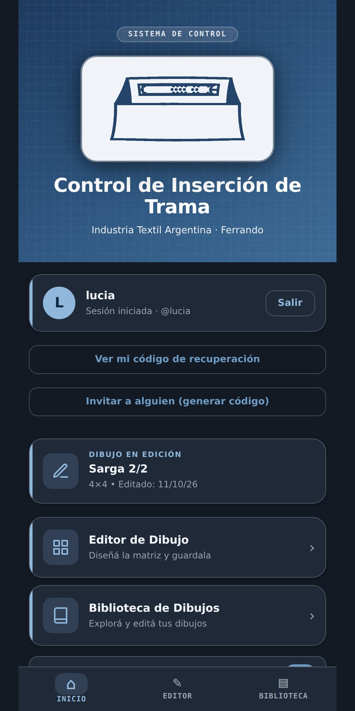
4Pantalla Editor de Dibujo
Es la pantalla donde se crea, se edita y se ejecuta la matriz (el "dibujo") que el telar va a tejer. Es la pantalla central de la aplicación.
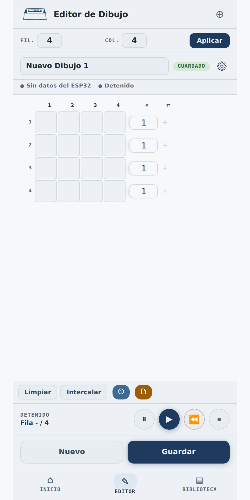
4.1. Definir el tamaño de la matriz
- 1En los campos correspondientes, escribir la cantidad de filas ("Fil.") y de columnas ("Col.") que va a tener la matriz. Las filas pueden ir de 1 a 300 y las columnas de 1 a 8, una por bobina de selección.
- 2Tocar "Aplicar" para que el cambio de tamaño se refleje en la grilla.
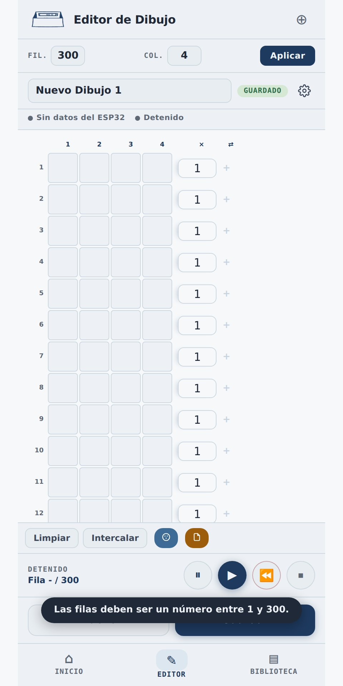
Si se ingresa un número fuera del rango permitido, el sistema avisa mediante un mensaje y ajusta automáticamente el valor al límite permitido más cercano (por ejemplo, si se escriben 350 filas, las deja en 300). Si al achicar el dibujo quedan celdas marcadas afuera del nuevo tamaño, la aplicación avisa cuántas se van a borrar y pide confirmación antes de hacerlo.
4.2. Nombrar el dibujo
En el campo de texto ubicado sobre la grilla se escribe el nombre con el que va a identificarse el dibujo dentro del sistema. Este nombre es el que después va a aparecer listado en la Biblioteca de Dibujos.
4.3. Estado real del telar
Debajo del nombre del dibujo hay una barra que muestra el estado real del telar, tomado directamente de la base de datos y del equipo de control físico (no es una simulación). Tiene dos indicadores:
Conexión del equipo de control (ESP32):
- Conectado (indicador verde): el equipo de control envió una señal de confirmación (heartbeat) hace menos de 8 segundos. Esto significa que el equipo está encendido, conectado a la red y funcionando con normalidad.
- Sin conexión, hace X segundos (indicador rojo): el equipo de control dejó de enviar señales de confirmación. Puede deberse a que está apagado, desconectado de la red, o tiene algún problema de funcionamiento.
- Sin datos del equipo (indicador gris): todavía no llegó ninguna señal de confirmación desde que se creó el registro del telar en el sistema, o el firmware instalado en el equipo es una versión anterior que no envía esta información.
Estado de tejido:
Indica si el telar está Tejiendo, Pausado, Detenido o en Error. Este dato proviene directamente de la base de datos del sistema, actualizada por las acciones reales que se ejecutan (ver el punto 4.6), y no de la animación que se ve en pantalla.
Es fundamental entender la diferencia entre lo que se ve en la animación de la grilla y lo que efectivamente hace la máquina física.
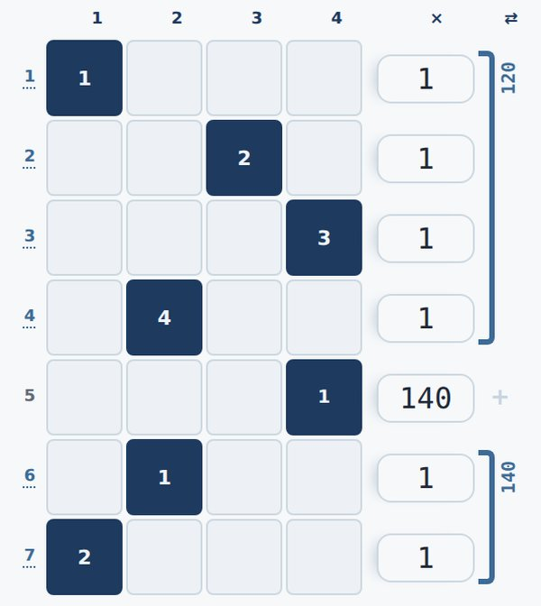
4.4. Dibujar la matriz
- Tocar una celda de la grilla la activa o la desactiva.
- Cada fila lleva una sola bobina, porque en cada pasada entra una sola trama. Si se toca otra celda de la misma fila, la anterior se desmarca sola y la aplicación avisa del cambio. Para alternar bobinas pasada por pasada, cada bobina va en su propia fila y esas filas se agrupan en un intercalado (ver Intercalar en el punto 4.5). Un dibujo guardado antes de esta regla que tenga filas con más de una bobina muestra un aviso con esas filas al abrirlo: hay que dejar una sola en cada una para poder guardarlo y tejerlo.
- Desde el celular, para cargar las pasadas de varias filas seguidas: tocar la casilla de la primera fila, escribir el número y tocar «Siguiente» (o Enter) en el teclado. La aplicación guarda ese valor y pasa a la casilla de la fila de abajo sin cerrar el teclado.
- El número a la derecha de cada fila (en la columna encabezada con ×) es la cantidad de pasadas seguidas que se teje esa fila (repeticiones). Empieza en 1 y acepta de 1 a 9999 (ver el punto 7).
4.5. Herramientas del editor
- Limpiar: borra por completo el contenido de la grilla (todas las celdas activadas vuelven a su estado inicial). El sistema pide confirmación antes de ejecutar esta acción, porque no se puede deshacer.
- Intercalar: agrupa filas seguidas para que se tejan alternándose. Cada fila lleva su bobina; las filas del grupo se recorren en orden, cada una tantas pasadas como su número de la derecha (normalmente 1), y vuelven a empezar hasta completar las pasadas del intercalado, contando cada bobina como una pasada. Por ejemplo, filas 1 a 4 con las bobinas 1, 3, 4 y 2, intercaladas 120 pasadas: 1, 3, 4, 2, 1, 3… (la secuencia entra 30 veces). Se abre con el botón Intercalar o tocando el «+» de la columna ⇄, a la derecha de cada fila, y se indica desde qué fila, hasta qué fila y cuántas pasadas. Antes de aplicar, la ventana muestra el orden de las bobinas y cuántas veces entra la secuencia. En la grilla, una llave en la columna ⇄ une las filas del grupo y muestra sus pasadas, y el cuadrado de cada bobina muestra su lugar en el orden (1, 2, 3…). Tocar la llave abre el intercalado para cambiarlo o quitarlo. Dos intercalados no pueden compartir filas, y una vuelta de un grupo puede tener hasta 32 pasadas.
- Ficha del dibujo (ícono de engranaje): guarda los metros de tela que avanza el telar en cada pasada y el hilado disponible: su peso en kilos y cuántos metros de tela alcanza a tejer como máximo. Con esos datos muestra cuántos metros se tejieron desde que se cargó el hilado, cuántos faltan, cuánto hilado se usó y cuánto queda. Al cargar un hilado nuevo se toca «Hilado nuevo» para que lo usado vuelva a contarse desde cero; corregir un número con «Guardar» no lo reinicia. Estos datos también salen en la ficha técnica en PDF.
- Simulador de color: permite asignar un color de hilo a toda la matriz, o a una fila puntual, con el fin de visualizar de forma aproximada cómo se va a ver el tejido resultante. Esto es solamente una ayuda visual dentro de la aplicación; no envía ninguna instrucción al telar físico ni influye en la ejecución del tejido.
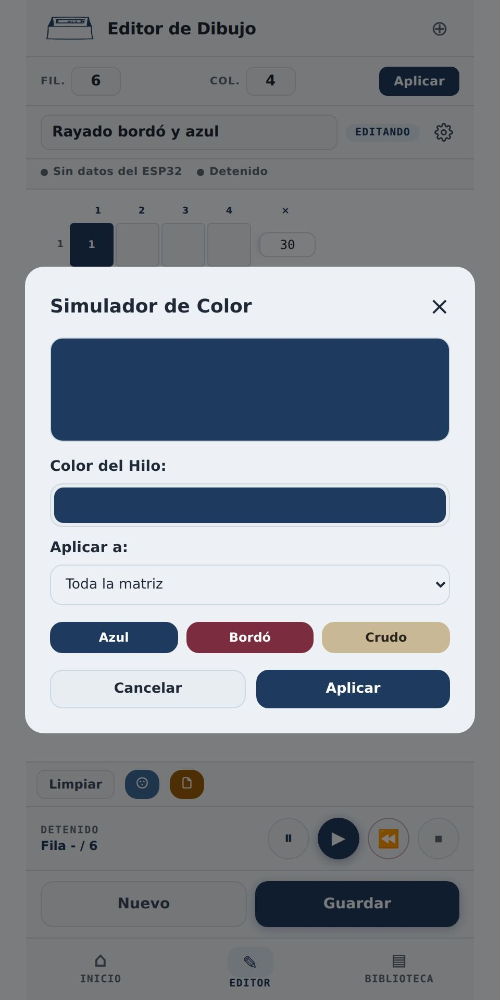
- Descargar ficha técnica: genera un archivo PDF con los datos del dibujo actual (filas, bobinas, pasadas por vuelta y, si están cargados los metros por pasada, el largo de tela de una vuelta), la producción hasta el momento si el dibujo ya se tejió (metros tejidos, pasadas, metros que faltan y horas de máquina, incluida la producción en curso; aproximados mientras el sensor no esté validado), el hilado si está cargado (peso, metros que alcanza a tejer, hilado usado y hilado restante), los colores de hilo, la matriz con las repeticiones de cada fila (en un intercalado, la llave que une sus filas, sus pasadas y el orden de cada bobina) y una vista previa de la tela a escala, con el telar dibujado arriba como si la tela saliera de la máquina (a la izquierda, las bobinas de trama numeradas con su color y sus alimentadores), en la que cada fila es una franja con el alto de sus pasadas y el color de su hilo (sin colores, un gris distinto por bobina). Al costado, una llave marca cada vuelta y, si están cargados los metros por pasada, una regla marca los centímetros de tela. Sirve para imprimirla o archivarla como referencia.
4.6. Controlar la ejecución del tejido: qué hace cada botón realmente
Esta es la sección más importante del manual, porque hay una diferencia real entre lo que cada botón parece hacer por su nombre y lo que efectivamente ejecuta hoy en el sistema. Se detalla a continuación el comportamiento exacto de cada uno, tal como está construido actualmente.
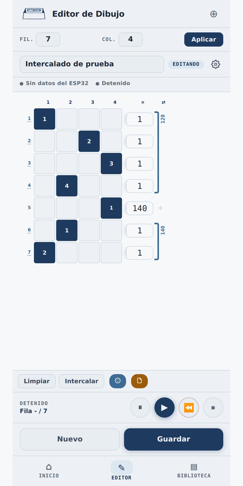
Iniciar (▶):
- Si el dibujo cargado en el editor es distinto del que tiene asignado el telar, el sistema asigna este nuevo dibujo, arranca la posición de tejido al principio (fila 1) y actualiza el estado real del telar a "Tejiendo" en la base de datos. Este cambio de estado es detectado por el equipo de control (ESP32), que a su vez acciona el relé conectado en paralelo al botón físico de Marcha del telar, arrancando la máquina real. Si el telar tenía un trabajo abierto de otro dibujo, la aplicación pregunta antes de empezar, porque ese trabajo se cierra y ya no se puede retomar.
- Si es el mismo dibujo que el telar ya tiene asignado (por ejemplo, después de una pausa), el sistema no reinicia la posición: retoma el tejido en la fila y la pasada en que quedó, que toma de la base de datos (aunque la página se haya cerrado o recargado), y vuelve a poner el telar en "Tejiendo", con lo que el equipo de control acciona Marcha.
Pausa (⏸):
- Detiene la máquina real: al tocarlo, el sistema pasa el telar a "Pausado" en la base de datos. Ese cambio es detectado por el equipo de control, que acciona el relé conectado en paralelo al botón físico de Pausa del telar. Funciona aunque el tejido se haya arrancado desde la botonera o desde otra pantalla. Si no hay ningún trabajo abierto (por ejemplo, la máquina se arrancó a mano con Marcha sin un dibujo en curso), el telar queda en "Detenido": no hay nada que retomar. (El botón "Detener" se eliminó: Pausa es el único botón de parada, igual que en la máquina.)
- La pausa no cierra el trabajo: el dibujo sigue asignado y la posición se conserva. Para retomar se toca Iniciar (▶) y el tejido sigue exactamente desde donde quedó, no desde el principio. Si se cortó un hilo, la posición se corrige con Retroceder telar antes de retomar.
- Ninguna otra acción del editor (crear un dibujo nuevo, cambiar el tamaño, limpiar la grilla) le da la orden de Pausa al telar: solo este botón.
Terminar trabajo (⏹):
- Cierra la producción del dibujo que se está tejiendo, después de pedir confirmación; si el telar estaba tejiendo, también lo detiene. La próxima vez que se toque Iniciar, el dibujo empieza desde la fila 1 y lo anterior ya no se puede retomar. Es la única forma de modificar la matriz de un dibujo que tiene un trabajo abierto, aunque esté en pausa.
Retroceder telar (⏪):
- Retrocede una pasada en la máquina real. Primero pausa el telar, después mueve la posición registrada una pasada hacia atrás y, por último, el equipo de control acciona el relé conectado en paralelo al botón físico de Retroceder de la botonera: mueve el mecanismo real de la máquina, no solo la posición en pantalla. Por eso pide confirmación antes de ejecutarse, y el tejido queda en pausa. Se usa para corregir la posición tras un corte de hilo. Con el sensor de pasada instalado, la pasada la descuenta el sensor al detectar el retroceso. (El botón anterior "Retroceder fila (↩)", que solo movía el contador en pantalla sin tocar la máquina, se eliminó: no tenía uso real y se prestaba a confusión con este.)
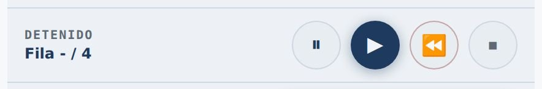
Indicador "Posición incierta":
- Aparece en la barra de estado del editor cuando la posición registrada puede no coincidir con la de la máquina: si el equipo de control (ESP32) se reinició en pleno tejido (corte de luz o traslado), o si alguien usó a mano los botones Marcha o Retroceder de la botonera sin que hubiera un trabajo abierto en el sistema. El aviso dice cuál fue la causa y queda visible hasta que alguien mira el telar, verifica dónde está parado realmente y toca "Confirmar".
Mientras el telar está en ejecución (Tejiendo), la matriz queda bloqueada para edición: no pueden modificarse el tamaño, los colores ni las pasadas. Tampoco mientras el dibujo tenga un trabajo abierto, aunque esté en pausa, porque la posición guardada se refiere a esa matriz: para cambiarlo hay que terminar el trabajo con ⏹.
4.7. Guardar y crear dibujos
- Nuevo: cierra el dibujo que está en el editor (cada cambio ya se guardó solo, así que queda en la Biblioteca) y abre uno en blanco. Si algún cambio no llegó a guardarse (por ejemplo, por un corte de conexión), pide confirmación antes de seguir. Con el telar tejiendo no se puede: primero hay que pausar (⏸).
- Guardar: guarda el dibujo actual, con el nombre asignado, en la Biblioteca de Dibujos, para que quede disponible para su uso posterior.
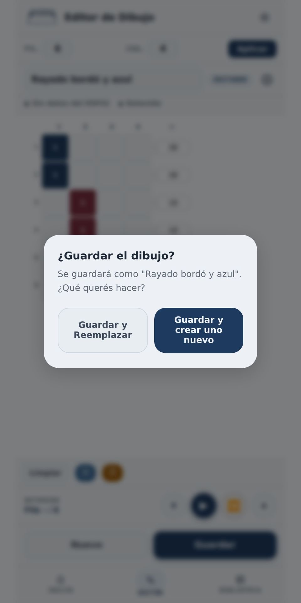
5Pantalla Biblioteca de Dibujos
En esta pantalla se listan todos los dibujos guardados hasta el momento en el sistema.
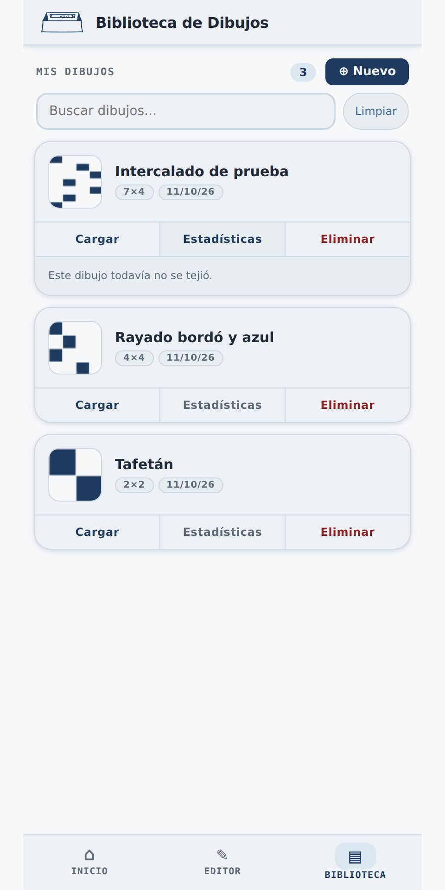
- 1En la parte superior se muestra la cantidad total de dibujos guardados.
- 2Se puede buscar un dibujo puntual escribiendo su nombre en la barra de búsqueda. El listado se filtra automáticamente a medida que se escribe.
- 3El botón "Limpiar" borra el texto de búsqueda y vuelve a mostrar el listado completo.
- 4El botón "Nuevo" lleva a la pantalla del Editor con un dibujo en blanco, para crear uno nuevo (igual que el botón Nuevo del Editor: con el telar tejiendo, primero hay que pausar).
- 5Cada dibujo de la lista tiene tres botones: Cargar (lo abre en el Editor), Estadísticas (muestra cuántas veces se tejió, las pasadas, los metros si tiene cargados los metros por pasada y las horas de máquina) y Eliminar (lo borra de forma definitiva, después de pedir confirmación).
- 6Si todavía no hay ningún dibujo guardado, la pantalla muestra un mensaje indicando que hay que crear el primero desde el Editor.
6Sobre los usuarios del sistema
El sistema no tiene distintos niveles de permiso entre usuarios: todo usuario que inicia sesión tiene acceso a las mismas funciones (crear, editar y eliminar dibujos, e iniciar o detener el tejido). No existe hoy una distinción entre, por ejemplo, un perfil de operario y uno de supervisor. La única excepción es el modo invitado (punto 2.4), que no es un usuario: no comanda el telar y solo puede cambiar los dibujos que creó como invitado.
El único control de acceso que existe es el que se explicó en el punto 2.2: los primeros tres usuarios pueden registrarse libremente, y a partir del cuarto en adelante hace falta que alguien que ya tenga una cuenta le dé un código de invitación a la persona nueva. Se genera desde Inicio, con el botón «Invitar a alguien (generar código)»; cada código sirve una sola vez y vence a los siete días. Esa capacidad de dar acceso no queda reservada solo para los primeros tres: se traspasa a cada usuario nuevo que se registra con autorización, así que cualquiera que ya esté adentro puede dejar entrar a otro. Esto es exclusivamente una medida para evitar registros no autorizados, no una jerarquía de permisos dentro del sistema.
7Preguntas frecuentes
Las dudas que más aparecieron sobre el uso de la aplicación, con la respuesta que quedó documentada.
¿Qué pasa si se corta Internet mientras el telar está tejiendo?
¿Por qué el dibujo se arma por filas y no celda por celda?
Porque así funciona la máquina. En cada pasada el telar inserta un hilo de trama a lo ancho de toda la tela, y esa trama sale de una sola bobina: por eso cada fila lleva una sola bobina marcada. Para repetir una pasada, cada fila lleva un número de repeticiones al costado: cuántas pasadas seguidas se teje esa misma fila.
Ese número está a la derecha de cada fila, en la columna encabezada con ×. Empieza en 1, que significa una pasada. Si se escribe 100, el telar teje esa misma bobina cien pasadas seguidas antes de pasar a la fila siguiente. Se acepta cualquier número entre 1 y 9999.
El total de pasadas por vuelta, que es la suma de las repeticiones de todas las filas, figura en la ficha técnica en PDF. Ese total, y no la cantidad de filas, es lo que dice cuánta tela se teje antes de que el dibujo vuelva a empezar.
¿Cómo armo un dibujo con tramos intercalados?
¿Se guarda mi huella dactilar en algún servidor?
¿Qué pasa si dos personas editan el mismo dibujo a la vez?
¿Por qué las pasadas y los metros aparecen con «≈»?
Guía de inicio rápido
El tablero principal tiene tres pulsadores: Avviamento (marcha), Stop (pausa) e Impulso o Marcia Discontinua, que avanza de a poco para enhebrar. El tablero secundario tiene Avanti y Indietro, que en esta máquina están desconectados.
Antes de arrancar, comprobar que el hilo de trama pase limpio desde el alimentador hasta la pinza, sin enredos ni vueltas en los guiahilos.
Apretar Avviamento en la botonera, o tocar Marcha en la aplicación. Las dos formas hacen exactamente lo mismo: el relé del nodo simula una pulsación de 300 milisegundos.
Con la máquina andando, el tambor avanza la cinta y los lectores ópticos leen los agujeros. Según lo que lean, las plaquetas accionan las cuatro bobinas de selección que levantan los marcos.
Apretar Stop. La máquina se detiene conservando la posición del dibujo. Reparar el hilo y, si hace falta deshacer una pasada, usar Retroceder desde la aplicación.
Al terminar la pieza, detener la máquina y cerrar la producción desde la aplicación con Terminar trabajo (⏹), para que quede registrada con sus pasadas y su tiempo de trabajo.
- El telar puede operarse enteramente a mano, como siempre. El sistema se conecta en paralelo a la botonera y no interrumpe ningún circuito existente.
- La parada de emergencia de la máquina es independiente del sistema. Ninguna orden remota la puede anular.
- El dibujo lo sigue definiendo la cinta de papel. El control del dibujo desde la aplicación corresponde al Nivel 2, que todavía no está instalado.
- La planta tiene once telares; el sistema se implementa por ahora en uno solo.
Guía de inicio rápido del hardware
Con el telar encendido y sin tejer, y el multímetro en alterna, apoyar las puntas en los bornes de un pulsador y observar qué pasa al apretarlo y soltarlo.
Con el gabinete enchufado pero el microcontrolador desconectado, medir la salida de la HLK-5M05 en continua. Tiene que estar entre 4,75 y 5,25 V.
Reiniciar el microcontrolador con el telar encendido y verificar que ningún relé cierre durante el arranque.
Empezar por Marcha. Llevar su par de hilos desde la botonera hasta el gabinete y conectarlo al relé y a la etapa de sensado.
Accionar Marcha desde la aplicación y verificar que el telar arranque. Después apretar el botón físico y verificar que la aplicación lo detecte.
Con los tres canales probados, rehacer el montaje sobre placa perforada con las conexiones soldadas.
- Nunca conectar el microcontrolador sin haber verificado antes la salida de la fuente.
- Los conectores dupont no van del lado de los 220 V: solo soldadura con termocontraíble o bornera a tornillo.
- El cable de señal no debe correr pegado y en paralelo al del motor. Si se cruzan, que sea en ángulo recto.
- El capacitor electrolítico del riel de 5 V va lo más cerca posible de los relés: sostiene la tensión cuando una bobina engancha.
Cómo se usa el telar en la planta y cómo funciona con la modificación que se le agregó: control remoto de arranque y parada desde la aplicación, con la previsión de comandar también el dibujo en una etapa posterior.
Estado de este documento: las secciones 2, 3 y 4 están completas, con las fotos del relevamiento presencial del 19/08/2026 incorporadas. Lo único que queda pendiente es lo del Nivel 2 (sección 3.2), que todavía no está instalado en la máquina: se probó en protoboard el 10/10/2026 y se está haciendo la plaqueta.
1Introducción
El telar que estamos modificando es una máquina de tejido plano que hoy funciona de forma totalmente mecánica: se enciende y se para con una botonera física, y el patrón que teje lo define una cinta de papel perforada que se va leyendo mecánicamente mientras la máquina trabaja.
Lo que estamos agregando no cambia nada del funcionamiento original de la máquina. Se conecta en paralelo a los controles que ya existen, así que el telar se puede seguir usando exactamente igual que siempre, de forma manual, en cualquier momento.
2Qué telar es y cómo funciona
2.1. El sistema de tejido
Los telares que tejen con patrón (no tela lisa) necesitan definir, en cada pasada, qué hilos de la urdimbre suben y cuáles quedan abajo. Eso es lo que forma el dibujo en la tela. Hay dos formas típicas de resolver esto:
Jacquard hilo por hilo: cada hilo tiene su propio control individual, tradicionalmente con tarjetas perforadas (una tarjeta por pasada, con un agujero por cada hilo que hay que levantar). Permite patrones muy detallados, pero implica manejar cientos o miles de puntos de control.
Por marcos (dobby): en vez de controlar cada hilo por separado, se agrupan en una cantidad chica de marcos, y en cada pasada se decide qué marcos suben. Todos los hilos de un mismo marco se mueven juntos. Es mucho más simple porque trabaja con pocos puntos de control (8 en el caso de nuestra máquina), y alcanza perfectamente para patrones repetitivos.
Cuando inspeccionamos el telar de la planta confirmamos, por su placa de datos, que es un Vamatex modelo C 201 (matrícula 1104, año de revisión 1989). La lectura del patrón se hace con una cinta de papel angosta montada en un tambor con rueda dentada, que acciona una fila de palancas de selección. El máximo de matrices que la máquina puede ejecutar en simultáneo es 8. Con eso queda claro que es un telar por marcos (dobby), no un Jacquard hilo por hilo.
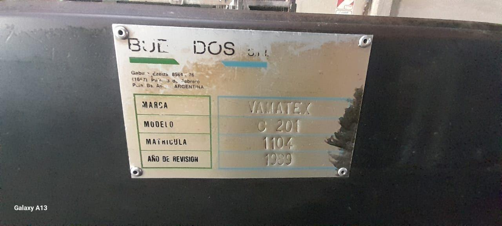
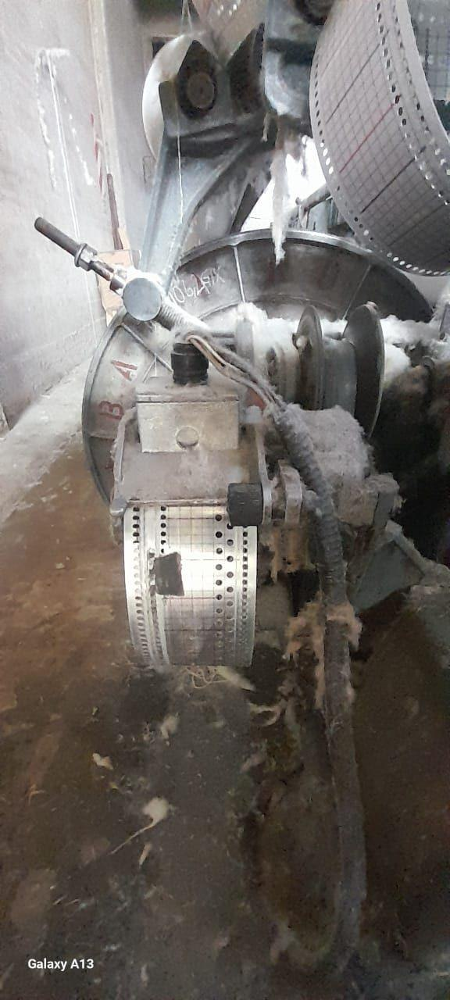
En criollo: es un telar de patrones, de la familia de los "Jacquard" en sentido amplio, pero con un mecanismo de lectura más simple, que trabaja por grupos de hilos en vez de hilo por hilo. Esto no es un detalle menor: es justamente lo que hace posible la modificación que estamos haciendo. Reemplazar la lectura de un puñado de marcos con electrónica es un proyecto que se puede hacer con lo que tenemos; reemplazar el control de cientos de hilos individuales no.
2.2. Dos funciones separadas en el telar
Para entender la modificación conviene separar el telar en dos partes que hoy trabajan por separado:
La parte que mueve la máquina. Es la que arranca, avanza, retrocede y para el telar. Se maneja con la botonera física, con los botones de Marcha, Retroceder y Pausa.
La parte que lee el patrón. Es la que decide, pasada por pasada, qué marcos suben para formar el dibujo. Hoy esto lo hace la cinta de papel perforada que describimos arriba (es mecánico, no tiene nada de electrónico).
3La modificación que le estamos haciendo al telar
3.1. Lo que ya está hecho (Nivel 1)
Lo primero que hicimos, y que ya está andando, actúa solo sobre la parte que mueve la máquina (punto 2.2, ítem 1). Es un ESP32 conectado en paralelo a los botones físicos de Marcha, Pausa y Retroceder, mediante tres relés.
Con esto, desde la página web (ver el otro manual) se puede:
- Poner en marcha el telar sin estar parado frente a la botonera.
- Detenerlo de la misma forma, a distancia (botón Pausa).
- Retrocederlo a distancia (botón ⏪), para corregir la posición tras un corte de hilo.
- Ver reflejado en la web lo que se hace desde la botonera: si un operario aprieta Marcha, Pausa o Retroceder en la máquina, el ESP32 lo detecta al soltar el botón y la página se actualiza sola. Un toque muy corto, de menos de un cuarto de segundo, puede no registrarse.
Algo importante: este agregado no reemplaza la botonera, ni toca ninguna otra parte de la máquina. Lo único que hace es "apretar" los mismos botones que apretaría un operario, pero desde otro lado. Por eso la botonera física sigue funcionando siempre igual que antes, de forma totalmente independiente del sistema electrónico. Si el ESP32 se desconecta, se apaga o falla, el telar se sigue manejando con la botonera de toda la vida, sin ningún problema.
3.2. Lo que viene después (Nivel 2, todavía no está instalado)
El siguiente paso, ya pensado pero todavía no puesto en la máquina, es meternos también con la parte que lee el patrón (punto 2.2, ítem 2). La idea es reemplazar la lectura de la cinta de papel perforada comandando las bobinas de selección que el telar ya tiene instaladas, mediante relés de estado sólido manejados por el mismo ESP32, que a su vez recibiría el patrón desde la página web.
Esto todavía no funciona sobre el telar real. Al 10/10/2026 se probó todo el circuito en protoboard (el sensor de pasada y el relé de selección con el ESP32) y funcionó; ahora se está haciendo la plaqueta para probarlo de manera correcta en la máquina. Vamos a actualizar este manual cuando esté instalado y probado en el telar.
4Uso del telar, paso a paso
Esta sección describe el uso del telar paso a paso, con las partes identificadas en el relevamiento presencial del 19/08/2026.
4.1. Partes de la máquina
Marca y modelo: Vamatex C 201 (Italia), matrícula 1104, año de revisión 1989. En el mismo taller hay otra máquina distinta, un Vamatex Propeller C 401: no confundirlas.
Urdimbre: los hilos tensados verticalmente que forman la base del tejido.
Lizos y peine: separan y guían los hilos de la urdimbre.
Caja de selección de marcos: donde está la cinta perforada que hoy decide qué marcos suben en cada pasada (punto 2.1).
Botonera física: cinco pulsadores repartidos en dos tableros separados a lo largo de la máquina (ver 4.2).
ESP32 instalado en paralelo a la botonera (la modificación del punto 3.1).
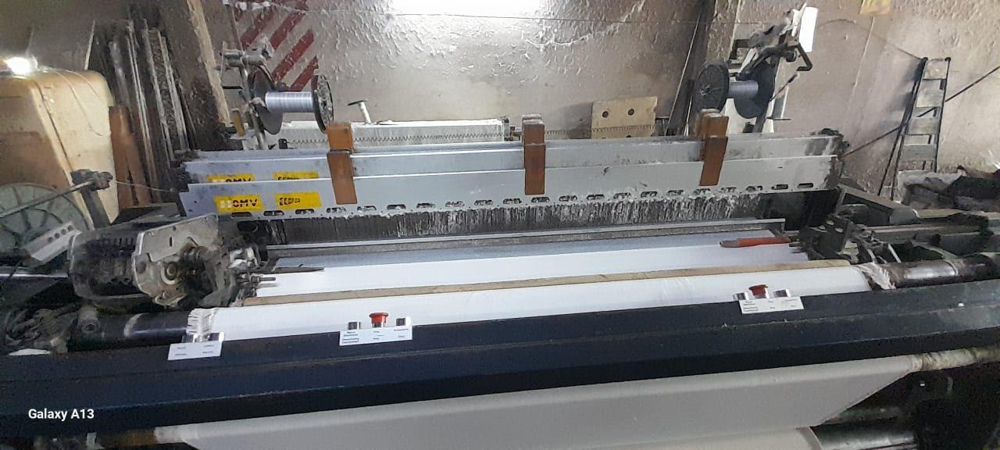
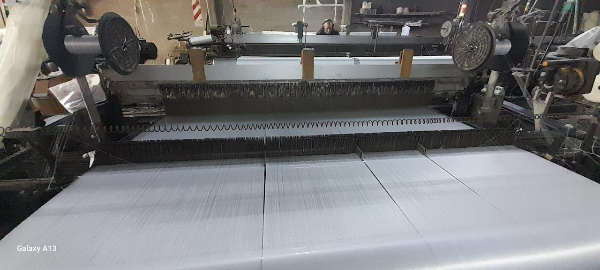
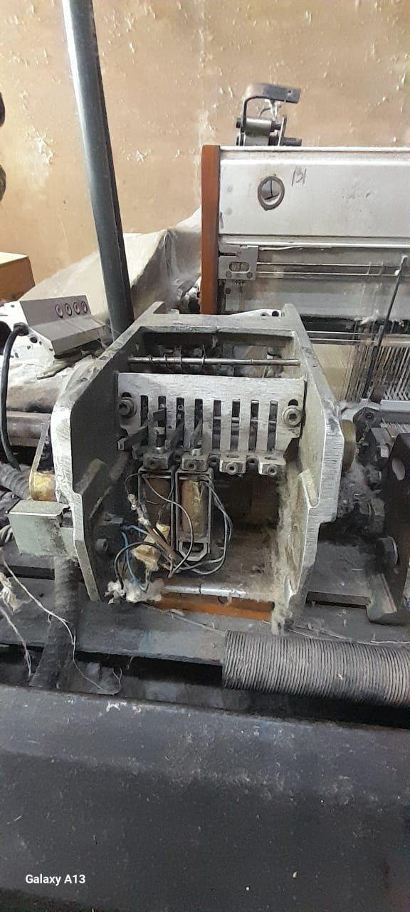
4.2. Puesta en marcha
La botonera de nuestro telar tiene cinco pulsadores, repartidos en dos tableros separados sobre la barra frontal de la máquina. Las etiquetas están en italiano e inglés, como vino de fábrica: • Tablero principal (tres botones): "Avviamento / Start" es Marcha; "Stop" es Pausa; y "Marcia Discontinua / Discontinuing Functionment" es el que llamamos Impulso, que mueve la máquina de a saltos en vez de en marcha continua. • Tablero secundario (dos botones): "Avanti / Advance" es Avanzar e "Indietro / Returne" es Retroceder. No es el panel completo con microprocesador de los modelos más nuevos de Vamatex (el manual oficial del fabricante, citado como referencia general, describe paneles con más botones y funciones): la nuestra es una versión más simple, de accionamiento directo.
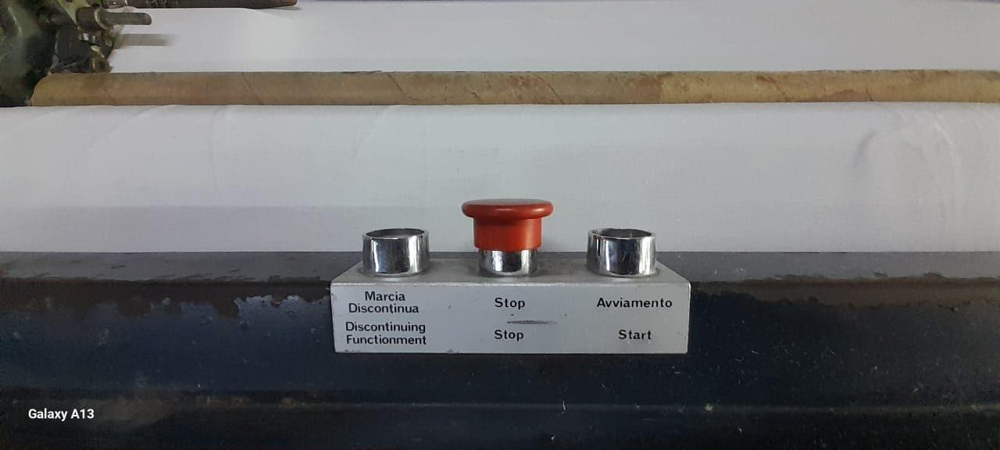
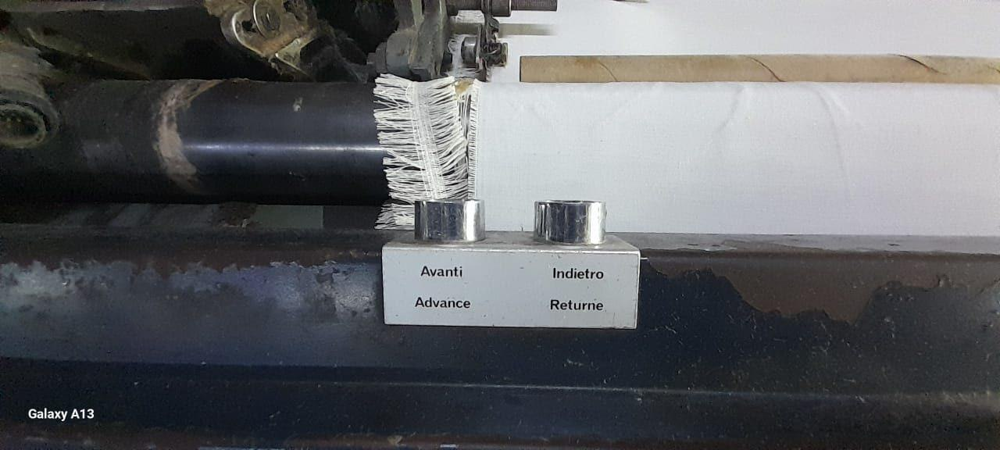
Antes de arrancar, se revisa que no haya nadie cerca de la zona de riesgo, que no queden herramientas u objetos sueltos sobre la máquina, y que las protecciones y tapas estén cerradas y en su lugar.
Para poner el telar a tejer, se aprieta el botón de Marcha. No hay ningún paso adicional puntual de nuestra máquina o de la modificación que agregamos: la revisión visual general (punto anterior) es lo único que se hace antes de arrancar.
El botón de Retroceder se usa cuando se corta el hilo: sirve para volver atrás y que el patrón no se eche a perder (si no se retrocede, el patrón del rollo termina distinto al pedido). Se explica en más detalle en el punto 4.5.
Una vez en marcha, conviene quedarse un momento verificando que no salga ningún ruido extraño. Si aparece algo raro, se para con el botón de Pausa (o desde la app, ver más abajo) y se busca la causa (ver punto 4.5).
4.3. Operación normal
Mientras el telar está tejiendo, el operario se encarga de:
Colocación de los rollos. Los rollos van en el portarrollos, en el lugar donde se conecta cualquier rollo en este tipo de telar (la zona de la urdimbre, ver punto 2.1).
Revisión. No hay un tiempo fijo establecido para revisar los rollos. El operario le va echando una mirada al telar cada tanto mientras está trabajando, y así controla que todo esté en orden.
Situaciones a vigilar. El telar es una máquina grande y hace ruido de forma normal mientras trabaja; eso no es una falla, es su funcionamiento habitual. Desde que está en marcha, no se registró ningún ruido fuera de lo normal ni ningún atasco. La única situación que efectivamente ocurre, y por la que se para el telar, es el hilo cortado, que pasa cada cierto tiempo. Se explica el procedimiento en el punto 4.5.
4.4. Detención y parada
Con nuestra botonera (Marcha, Retroceder, Pausa), el botón de Pausa es el que se usa para parar el telar, tanto al terminar la tarea como ante cualquier problema que surja mientras está tejiendo (hilo cortado, ruido raro, etc.). Confirmado con la máquina real: no hay ningún otro botón además de estos tres, así que no existe un botón de emergencia separado.
El manual oficial de Vamatex, como referencia general para esta familia de telares, describe además un botón de emergencia específico, de color rojo, pensado para cortar todo de forma inmediata ante un peligro real. Ya confirmamos con el dueño de la fábrica (visita del 19/08/2026) que el botón de Pausa (Stop) de nuestra máquina se usa en la práctica como una parada normal: no tiene mecanismo de enclavamiento ni procedimiento especial de rearme, y para retomar simplemente se aprieta Marcha de nuevo. No cumple, entonces, la función de un botón de emergencia con corte inmediato (si en algún momento se necesita esa función, habría que agregar un mecanismo aparte).
Sea cual sea el motivo de la parada, antes de volver a arrancar conviene asegurarse de que el problema que la originó ya esté resuelto.
4.5. Situaciones de error o emergencia
El único caso por el que se para el telar es el hilo cortado. El procedimiento es el siguiente:
El operario detiene el telar desde la aplicación (la web, ver el manual de la página web, punto 4.6).
Saca el hilo cortado.
Si todavía queda hilo en el rollo, toma el hilo del mismo rollo y lo prepara de nuevo, dejándolo listo para retomar.
Usa el botón de Retroceder para volver el telar a una posición anterior antes de arrancar de nuevo. Esto es importante: si no se retrocede, el patrón que se está tejiendo queda mal (no coincide con el patrón pedido).
Una vez retrocedido y con el hilo preparado, se arranca de nuevo con Marcha.
Sobre el ruido de la máquina: al ser un telar grande, hace ruido de forma normal mientras trabaja, y eso no es motivo de alarma. No se registraron ruidos fuera de lo normal desde que está en marcha, así que no hay, por ahora, un procedimiento aparte para eso. Del mismo modo, no se registraron atascos.
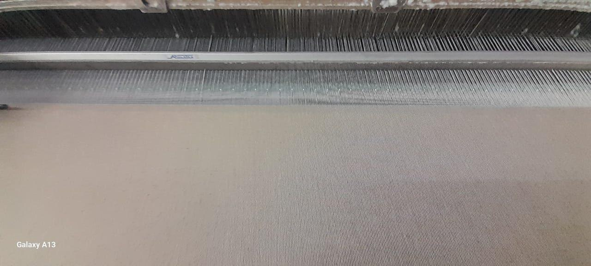
Como criterio general de seguridad (esto es válido más allá de los casos puntuales de arriba): nunca hay que tocar partes en movimiento del telar, ni sacar ninguna protección o tapa, mientras la máquina está funcionando. Cualquier intervención manual se hace con el telar parado.
Nuestro telar, al tener el sistema de arranque y parada remotos por el ESP32, agrega una posibilidad más: se puede detener la máquina también desde la página web (ver el manual de la página web, punto 4.6), sin tener que estar físicamente al lado de la botonera. Como se explicó en el punto 4.4, Pausa es el botón que usamos hoy para parar la máquina en cualquier circunstancia; si además cumple la función de un botón de emergencia es algo que todavía estamos revisando (ver punto 5).
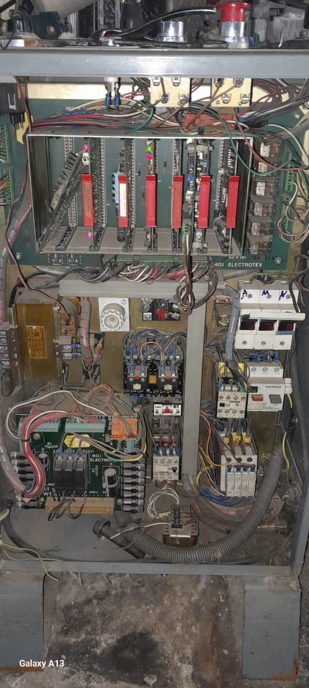
5Preguntas frecuentes
Las dudas que más aparecieron sobre la máquina y la modificación incorporada, con la respuesta que quedó documentada.
¿El operario puede seguir usando el telar a mano?
¿Por qué un relé de estado sólido con salida MOSFET y no uno común o un SSR de triac?
¿Cuándo se va a poder parar el telar automáticamente al terminar la pieza?
¿Qué hace exactamente el botón Retroceder?
El equipo
Los perfiles profesionales de quienes desarrollaron el proyecto.
Supervisión académica: Prof. Pedaci, Lourdes. Cátedra de Evaluación de Proyectos, Instituto Leonardo Murialdo.
Evaluación de Proyectos · 7mo Informática 2026 · Instituto Leonardo Murialdo.
Prof. Pedaci, Lourdes